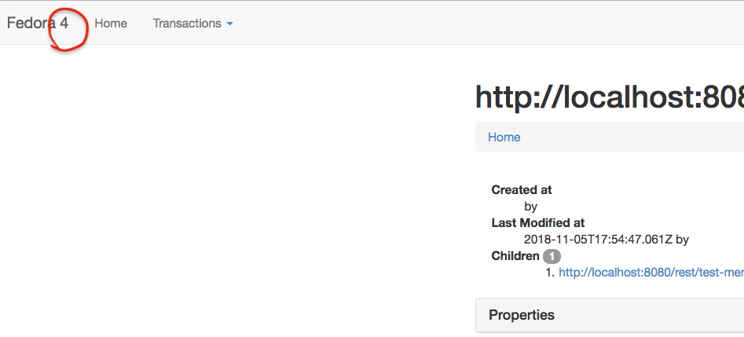

pull-request: https://github.com/fcrepo4/fcrepo4/pull/1473
FCREPO-2933 Remove "4" from "Fedora 4" label in title bar of the UI
| Type | Improvement |
|---|---|
| Status | Closed |
| Resolution | Fixed |
| Priority | Minor |
| Reporter | Danny Bernstein |
| Assignee | James Creel |
| Created | 2018-11-05 19:24 UTC |
| Updated | 2018-11-15 17:19 UTC |
| Resolved | 2018-11-15 17:18 UTC |
| Components | f4-core |
| Fix versions | Fedora 5.0.0 |
| Labels | UI, easy |
| Parent | FCREPO-2582 API Alignment |
Description
See attached screen shot 
Attachments
- Screen Shot 2018-11-05 at 11.18.26 AM.png, 50152 bytes, added by Danny Bernstein on 2018-11-05
Comments (4)
Andrew Woods, 2018-11-12 14:33 UTC
Andrew Woods, 2018-11-14 20:07 UTC
Resolved with:
Andrew Woods, 2018-11-14 21:00 UTC
James Creel: Would you be willing to submit another PR targeting the https://github.com/fcrepo4/fcrepo4/tree/5.0.0-RC branch, for:
https://github.com/fcrepo4/fcrepo4/pull/1473
Thanks for picking this up, James Creel!
Would you mind providing an iCLA prior to submitting the PR?